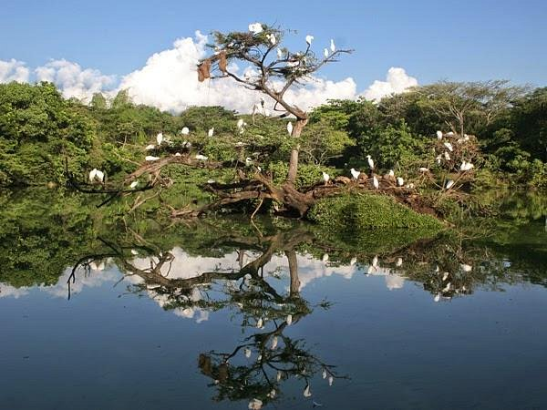

Ecoparks

Christ the Kinge
The Cristo Rey Ecopark is one of Cali's most emblematic tourist and religious destinations, recently renovated as part of a comprehensive project that seeks to connect the city with its guardian hills.
More information
Image taken from:

Biodiversity Ecopark COP16
The COP16 Biodiversity Ecopark (formerly known as Corazón de Pance) is a 92-hectare natural space located in southern Cali, designed as the main environmental legacy of the COP16 summit. This "green lung" seeks the conservation of species and environmental education through a sustainability model that uses solar energy and rainwater harvesting.
More information
Image taken from:

ecopark lake of the herons
The Lago de las Garzas Ecopark is a wetland and natural refuge located in southern Cali, specifically in the Pance sector (Commune 22). It is an ideal space for contemplative ecotourism, relaxation, and environmental education without leaving the city.
More information
Image taken from: